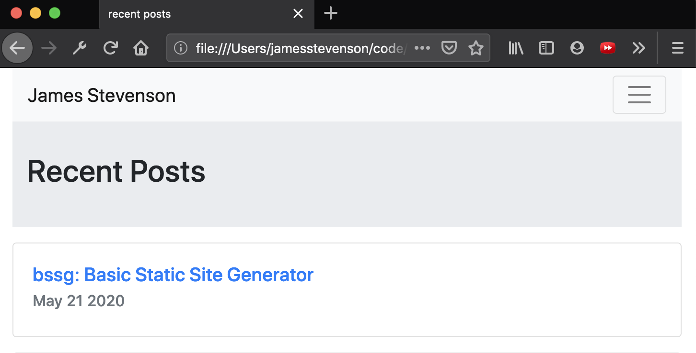

GitHub repo available here
My personal website has undergone a number of evolutions - it started as a standard Wordpress template intended to house my philosophy and rhetoric work, and then went through a conversion to Django and my own original HTML and CSS before going dark (I didn't feel like paying web hosting fees anymore). I thought my blogging days were behind me, but as I've found myself scribbling in Neovim about data analysis and CS education, I've succumbed to the urge to post the takes online.
Still, paying for web hosting sucks, and I thought it would be fun to throw something together myself rather than pulling out Jekyll; hence, the Basic Static Site Generator (BSSG) was born. It's fairly straightforward Python, using middle-of-the-road string replacement strategies to load templates for a few different HTML elements and populate them with content generated with Mistune from markdown files.

I am not a front-end developer and don't pretend to be, so I took the easy way out and grabbed some basic Bootstrap material to start with. It would, however, be pretty trivial to rewrite any HTML/CSS framework to work with the design elements that bssg expects.